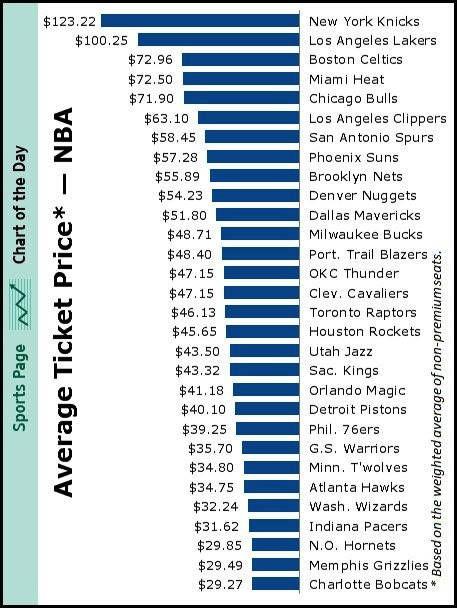

d3 with a CSV database
Today we're going to use a data set I created with the average ticket price and win loss record for NBA teams up until Friday of this season. We will try to examine this data to make an analysis or visualize some insight.
The demo is based on a simple chart
which was gathered from these sources NBA.com and this chart from Wall Street Journal:
The HTML setup is easy, we just need a container div in which we will place out svg and content.
<div id="chart"></div>To get the data into a format we can use, export a CSV file (comma separated values) from our spread sheet and load it into an object using the d3 text method.
d3.text('nbadata.csv', function(datasetText) {
var parsedCSV = d3.csv.parseRows(datasetText);
var json = (function() {
var obj = [];
for (var i = 1, csvlen = parsedCSV.length; i < csvlen; i++) {
var newObj = new Object();
for(var j = 0, len = parsedCSV[0].length; j < len; j++) {
newObj[parsedCSV[0][j]] = parsedCSV[i][j];
}
obj[i-1] = newObj;
}
return obj;
})();
console.log(json);
});That code loads the CSV data into an array called parsedCSV. Then we use a simple function to iterate over the array, using the first row as the items for 30 different objects, each representing the data for one team, which is then put into array which we call json. If you copy that code into the JavaScript console, you will see the data.
Next we want to setup the area for our chart design. We will create an SVG to contain the chart and populate it with basic lines and labels.
var w = 600;
var h = 400;
var margin = 50;
var svg = d3.select('#chart1').append('svg')
.attr('width', w + margin*2)
.attr('height', h + margin*2);
svg.append('line')
.attr({x1:margin/2,x2:margin/2,y1:h+margin*3/2, y2:margin})
.attr('stroke', 'gray');
svg.append('line')
.attr({x1:margin/2,x2:w+margin,y1:h+margin*3/2, y2:h+margin*3/2})
.attr('stroke', 'gray');
svg.append('text')
.attr({x:margin/2, y:h+margin*2, stroke:'darkblue', 'font-size':'14'})
.text('Wins');
svg.append('text')
.attr({x:margin/2, y:h+margin*2, stroke:'darkblue', 'font-size':'14', transform:'translate(15,-40) rotate(-90 '+margin/2+','+(h+margin*2)+')'})
.text('Average Ticket Price');Notice the variable w and h at the top. These set the height and width of our svg. We can change these and the entire design will change in suit. We also have a margin so there is enough space to view all the data.
Next we want to set up some markers of the values. We will plot the wins for each team on the x axis and average ticket price on the y axis. In order to show the range for these values, we will use our data to quickly calculate the range, from min to max for ticket price and wins. We could just look at the chart, but these functions will allow us to add data to our chart later.
var maxPrice = (function(){
var m = 0;
for (var i = 0, len = json.length; i < len; i++) {
if (Math.floor(json[i]["Average Ticket Price"]) > Math.floor(m)) {
m = json[i]["Average Ticket Price"];
}
}
return m;
})();
var minPrice = (function(){
var m = 200;
for (var i = 0, len = json.length; i < len; i++) {
if (Math.floor(json[i]["Average Ticket Price"]) < Math.floor(m)) {
m = json[i]["Average Ticket Price"];
}
}
return m;
})();
var maxWins = (function(){
var m = 0;
for (var i = 0, len = json.length; i < len; i++) {
if (Math.floor(json[i]["Wins"]) > Math.floor(m)) {
m = json[i]["Wins"];
}
}
return m;
})();
var minWins = (function(){
var m = 200;
for (var i = 0, len = json.length; i < len; i++) {
if (Math.floor(json[i]["Wins"]) < Math.floor(m)) {
m = json[i]["Wins"];
}
}
return m;
})();Now I can use those values, along with a couple of loops, to create text and line markers for the range of values on each axis.
Finally, I want to append circles to the SVG to represent the data for each team.
Adding the circles requires a very important mapping function. This function allows us to map the range of values from the min to max in wins and ticket price, to the range of space we have on our chart. The function is simple but a little tricky, let's take a look:
function map(value, start1, stop1, start2, stop2) {
return start2 + (stop2 - start2) * ((value - start1) / (stop1 - start1));
}Let's look at how that is used to place the circles on the chart.
svg.selectAll('circle')
.data(json)
.enter().append('circle')
.attr('cx', function(d) { return map(d["Wins"], minWins, maxWins, 0, w) + margin; } )
.attr('cy', function(d) { return h + margin - map(d["Average Ticket Price"], minPrice, maxPrice, 0, h); } )
.attr('r', '4' );Important Label Heading
$100
100 wins,
100 losses
So, we have some data. Not very exciting though, is it? Let's add some color and change the shapes and see if we can reveal more about the data we're looking at.
Let's use d3 to add some functions to change values in this code. There are a few buttons under our chart with different functions attached. Look at how the buttons work and then the functions behind them.
d3.select('#size').on('click', function(){
d3.select('#chart3').selectAll('circle')
.data(json)
.transition()
.attr('r', function(d) { return map(d["Average Ticket Price"], minPrice, maxPrice, 10, 30) });
});d3.select('#color').on('click', function(){
d3.select('#chart3').selectAll('circle')
.data(json)
.transition()
.attr('fill', function(d) { return "hsl("+ Math.floor(map(d["Average Ticket Price"]/d["Wins"], leagueAverage/minWins, leagueAverage/maxWins, 0, 90)) +",100%,50%)"; })
});There isn't a lot to conclude from this dataset, other than that ticket value has no correlation to wins. But if we were to map this data geographically, what might we find? One we can conclude from this data, assuming that you like watching a team win instead of lose, is that the best ticket value can be found in cities found in the lower right hand corner of the bracket. We can see the names of those cities by mousing over the circles, but what if we wanted to see all of the data associated with each basketball team? We can use what is known as a tooltip to add HTML to the page and populate it with our data.
We can define the tooltip layout with a div that we make display:none and then use d3 to bring back with a hover.
The HTML and CSS for out tooltip:
<style>
#tooltip.hidden {
display:none;
}
#tooltip {
position:absolute;
background:rgba(121,121,121,0.95);
border-radius:10px;
display:inline-block;
padding:10px 10px;
font-size:9px;
line-height:9px;
color:#eee;
border-bottom:3px solid darkgray;
}
#tooltip p {
margin:0;
}
</style><div id="tooltip" class="hidden">
<h1><span id="team">Important Label Heading</span></h1>
<p>Average Ticket Price: $<span id="value">100</span></p>
<p><span id="wins">100</span> wins, <span id="losses">100</span> losses </p>
</div>Resources